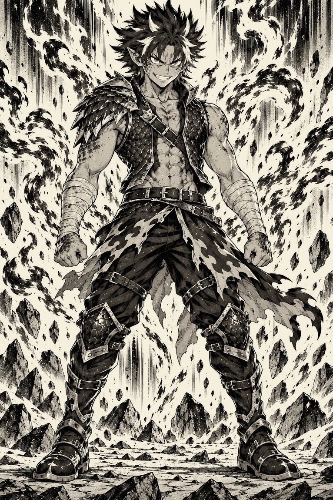
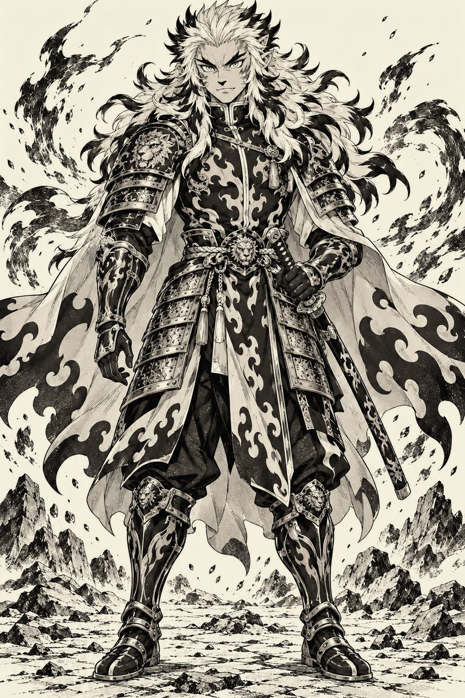

Natsu Dragneel
vs Kyojuro Rengoku
A firestorm that once beat Zero, against a charge that digs into the ground. The hurricane needs duration; the blade only needs one instant.
Complete duel, verdict included — freeThe rules of this duel
A register of flame and passion. Shared objective — neutralize without necessarily killing, even though both styles carry an intensity that makes holding that restraint to the end genuinely hard.
Ground
A dry forest on a mountainside, at the twilight hour Rengoku favors. The ground is covered in pine needles and brush — terrain that can catch fire on its own if the fight drags on.
Victory condition
Neutralize without necessarily killing.
Canon snapshot — Natsu
Fairy Tail (Hiro Mashima, 2006–2017), Oración Seis / Nirvana arc (Year X784), before the seven-year Tenrou timeskip. Natsu has the full Fire Dragon Slayer arsenal — Iron Fist, Roar, Wing Slash — and both forms of the Crimson Lotus, including the Flame Blade Explosion that just put Zero down. What he doesn't have: Dragon Force on demand. He shifts into it twice in this arc, but always because he's fed an exceptional flame — never by choice. Lightning Flame Dragon Mode and Fire Dragon King Mode are still hundreds of chapters away.
Canon snapshot — Rengoku
Kimetsu no Yaiba (Koyoharu Gotōge, 2016–2020), Mugen Train arc, in his final confrontation against the Third Upper Moon, Akaza: the character's absolute peak, the night he pushes a human body far beyond what a human body can take. He has the Flame Breathing forms shown in the manga, plus the Third Form introduced by the anime film adaptation. The asymmetry between the two snapshots is deliberate: Rengoku is taken at his definitive maximum, Natsu at a deliberately earlier stage than his own. Taken after Tenrou, there would be no duel left to write.
The fighters
Raised by the fire dragon Igneel until his mysterious disappearance, Natsu grows up not knowing where to look for his father, carried only by the certainty that Fairy Tail is his real family. At this point in canon, his Fire Dragon Slayer magic is already fearsome: he generates, launches, and eats fire to replenish his strength, and he put Gajeel Redfox — another Dragon Slayer, with famously unbreakable iron scales — on the ground in a single Crimson Lotus assault.
Facing Zero, the true body of dark guild leader Brain, Natsu unleashes his most destructive technique, the Flame Blade Explosion, to cleanly cut through one of the six lacrima pillars powering Nirvana. This is already a Natsu capable of leveling an entire building in one motion — and who, moments later in that same fight, will shift into Dragon Force a second time by devouring flames Jellal offers him, neither willingly nor under his own control; this sheet stops just short of that shift. He remains still far, far from the cataclysmic dragon he'll become after Tenrou.
Son of the disgraced former Flame Hashira Shinjuro Rengoku, Kyojuro chose to carry the family torch alone. Always smiling, always upright, he embodies a solar discipline that never wavers — not even in the face of death.
His Nichirin blade is red — the color specific to every practitioner of Flame Breathing, fixed the very first time the blade is drawn — but the bursts and the tiger of flame his forms trace in the air aren't real combustion: Gotōge herself clarified that these elemental effects, in a human practitioner, are a matter of perception rather than physical fire generation. Flame Breathing is one of the five Breathing styles derived directly from Sun Breathing — a distant, human echo of the first flame, whereas Natsu is literally a fire dragon.
During his final fight against Akaza, he holds off an Upper Moon alone for hours, protects every passenger on the train, and pushes his human body far beyond what a human body should be able to endure — until dawn, until total exhaustion.

The table
| Criterion | Natsu | Rengoku |
|---|---|---|
| Physical strength A Dragon Slayer hits harder than a human body, even one pushed to its martial peak. | 8 | 7 |
| Speed / reflexes Breathing gives Rengoku a blade speed Natsu can only track by reflex. | 7 | 8 |
| Resilience / endurance A Slayer's flesh closes almost instantly; Rengoku holds on willpower alone, broken bones included. | 8 | 7 |
| Destructive power / range The Crimson Lotus levels an entire building; the Ninth Form gouges the ground in its wake. | 8 | 7 |
| Combat technique The board's biggest gap: a Hashira against a boy who charges in headfirst. | 5 | 10 |
| Perception / tactical intelligence Rengoku reads a guard in a second; Natsu underestimates anything that doesn't look like magic. | 6 | 8 |
| Willpower / mental fortitude Two wills that don't bend — Rengoku's has already held out until dawn against an Upper Moon. | 9 | 10 |
| Duel factor (exploiting the opponent's flaw) Rengoku knows exactly which reflex to trap in a Dragon Slayer; Natsu has nothing to exploit in return. | 5 | 8 |
| Total / 80 | 56 | 65 |
Pinned to this exact point in canon, the gap between the two universes narrows considerably. Natsu keeps the edge in raw power and durability, but Rengoku — with no magic, no dragon, no scales — outclasses him by a wide margin in pure martial mastery. It's a duel between a hurricane and a razor's edge: the hurricane wins the exchange of force almost every time, but the blade only needs one well-placed pass.
What each one can do
Fire Dragon Slayer Magic (Karyū no Metsuryū Mahō)
Generation, projection, and ingestion of fire from any part of the body.
Crimson Lotus: Fire Dragon's Iron Fist (Guren Karyūken)
A barrage of flaming punches, each impact triggering an explosion. Pierced Gajeel's Iron Scales and leveled an entire guild building.
Crimson Lotus: Flame Blade Explosion (Guren Bakuenjin)
Natsu's most destructive technique at this stage: a whirlwind of cutting flame launched in a wide arc. Destroyed one of Nirvana's lacrima pillars and defeated Zero.
Roar and Iron Fist (Karyū no Hōkō / Karyū no Tekken)
A massive breath attack and a flaming strike, the basic backbone of his style.
Ingestion (Dragon Slayer)
Can eat any outside fire source to replenish his stamina and magic — but never his own flames.
Heat resistance
Immune to burns, including a dragon's.
Limit: charging in headfirst
Natsu systematically underestimates techniques that don't look like conventional magic, and his Slayer instinct can push him into reflexes he doesn't control.
Flame Breathing, manga forms (Honō no Kokyū)
First Form: Unknowing Fire (charges at extremely high speed, a horizontal slash aimed at decapitation); Second Form: Rising Scorching Sun (an upward vertical slash); Fourth Form: Blazing Universe (a circular slash that defends and strikes in the same motion); Fifth Form: Flame Tiger (a series of strikes tracing a tiger of flame, against an already-broken guard).
Third Form: Fire Wheel
A wide, continuous arc, absent from the original manga but introduced in the official anime adaptation of the Mugen Train film.
Ninth Form: Rengoku (Purgatory)
His most powerful technique — a high stance, a charge at extreme speed, one strike powerful enough to gouge the ground in its wake.
Red Nichirin blade (Nichirintō)
Red is the color specific to Flame Breathing, fixed as soon as the blade recognizes its wielder. Nichirin blades absorb sunlight, which makes them lethal to demons; canon grants them no intrinsic heat resistance of their own.
Unbreakable spirit
Keeps fighting with broken bones and pierced organs, far beyond what a human body should be able to bear.
Limit: mortality
He's a mortal human body, with no magic, no regeneration. A single one of Natsu's area attacks, if it lands fully, would be enough to take him out for good.
The asymmetry
Natsu wins if he turns the duel into a test of destruction and endurance.
— two fires that don't burn on the same fuel —
Rengoku wins if he imposes precision before power gets to speak.
Canon boundaries
Rengoku's techniques aren't elemental magic, but they don't produce real combustion either: Gotōge herself clarified, in the manga's supplementary material, that a Breathing style's elemental effects, in a human practitioner, come down to perception — the speed and precision of the motion give onlookers the illusion of fire without generating its substance. A Dragon Slayer like Natsu, whose instinct recognizes and swallows any real fire source, therefore finds himself facing emptiness: nothing to ingest, just steel in motion.
One narrow, distinct exception exists — see below — but nothing indicates Rengoku uses it against Akaza. This sheet therefore holds to the most faithful hypothesis: Natsu's reflex most often closes on nothing but emptiness and steel — a trap for the Dragon Slayer's instinct rather than an energy source.
Of the nine forms Flame Breathing counts, only five actually appear on Gotōge's pages: One, Two, Four, Five, and Nine. The Third Form, Fire Wheel, exists only in the anime adaptation — introduced by the Mugen Train film, an official extension from studio Ufotable, but absent from the original manga. This sheet keeps it regardless, because it's an official addition, not a fan invention.
Forms Six, Seven, and Eight, meanwhile, have never been shown or named anywhere: Rengoku's death carries that knowledge with him, and the family tradition ends after him. Unofficial sources sometimes propose names to fill that gap, but they contradict each other. No intermediate form is invented here, even though it leaves Rengoku with an apparently incomplete repertoire.
The snapshot chosen for this sheet is also the only fight where Rengoku is shown giving his complete measure against a regenerating opponent. The result is documented: Akaza instantly closes everything the Hashira opens in him, and tells him so to his face — a human can't beat a demon, because a human doesn't heal. Rengoku strikes true, strikes hard, strikes for hours, and his opponent never goes down.
This doesn't transpose directly: a Dragon Slayer's flesh doesn't close at an Upper Moon's speed, and Natsu has none of Akaza's resilience. But the shape of the problem is the same, and Rengoku answers it the only way that works: instead of killing, he immobilizes, impales his opponent's neck and holds him in place waiting for the sun to rise and do the job for him. On this mountain, at twilight, no sun is coming — and what Natsu draws from a forest fire is exactly the opposite of a countdown.
The Scarlet Blade — kakutō — is the only documented state in which a Nichirin sword gives off real heat: enough to burn a demon, make it cough up blood, and block its regeneration for long seconds, as seen on Hantengu and later on Muzan himself. So it isn't an illusion of perception; it's fire, in the sense a Dragon Slayer would understand it.
Except that state is only reached by pushing the blade's temperature through extreme grip force, willpower pushed to its limit, or Nezuko's blood — and above all, it's only accessible to demon slayers who have awakened the Mark. Rengoku dies on the Mugen Train, before the Mark and the Scarlet Blade return to the story. The red of his sword isn't a temperature: it's the color a blade takes on when Flame Breathing recognizes it.

The two scenarios
Twilight bleeds over the ridge. Rengoku waits, motionless, hand on the pommel of his blade — that solar courtesy he keeps even on the edge of a fight to the death. Across from him, Natsu cracks his knuckles.
"Can't wait, man! You've really got a scent of fire for a human." — "And you have the scent of a dragon who's never yet met a blade worthy of the name. So show me."
Natsu doesn't let him open the dance. Fire Dragon's Iron Fist chained at full speed, then a Roar fired point-blank: Rengoku parries, deflects the blast with a wide sweep of his blade, and steps back, brow furrowed for the first time in the duel. The first round belongs to Natsu.
That's when he changes rhythm. First Form, Unknowing Fire — a red line splits the air toward Natsu's neck; he tilts his head an inch, the blade cleanly slices off a lock of pink hair. Second Form, Rising Scorching Sun is already launched: pure Slayer reflex, he opens his mouth wide to swallow it — and finds only a taste of metal and emptiness. He coughs, staggers back, genuinely thrown off, and that flicker is enough for Rengoku to seize the whole initiative. "What is this nonsense? You don't have real fire?" — "Never needed it."
Third Form, Fire Wheel — a continuous arc sweeping wide. Natsu takes two gashes on the forearm; his Dragon Slayer flesh closes almost instantly. He lands a straight punch that catches Rengoku's shoulder — a real hit — but Rengoku doesn't bend: Fifth Form, Flame Tiger, finds the half-open guard and sends him to the ground, one knee in the ash. "Stay down," Rengoku says, without cruelty, almost pleading, before taking his stance for the Ninth Form.
Around them, the forest has given way to the heat of the exchange: brush crackles, a wall of flame climbs the slope. Natsu, on his knees, smells it before he even turns his head — and this time, he knows what he's looking at.
"Ah. Now THAT, though..." He inhales the entire blazing tree line behind him in one breath — a real inferno, not a blade's illusion. The failed bite dissolves under rediscovered certainty: this is what fire you can eat looks like. He's back on his feet before Rengoku's charge has even finished launching.
"Crimson Lotus: Flame Blade Explosion!"
It's no longer a fist, it's a whirlwind — the technique that cut clean through an entire pillar of Nirvana closes on Rengoku's blade rather than his body, a choice Natsu can't quite explain even to himself. The steel glows red, screeches, holds a second too long for ordinary metal — then gives way, half the edge scattering in molten droplets under a real dragon's flame.
Rengoku, disarmed, takes the explosion's blast full-on and collapses into the ash. Natsu drops to his knees at once, grinning and out of breath, clumsily checking that he's still breathing. "You're a damn dragon too, you know that?" — "A dragon... who never needed to eat... to shine."
Same ridge, same blood-red light — but this time Rengoku doesn't attack first. He watches, a pause Natsu clearly doesn't like. "So, samurai, feeling less proud now?" — "I'm looking first at what I'm going to have to cut. Never takes long."
Natsu doesn't grant him that luxury. Iron Fist, then Roar, chained without a breath — Rengoku has to deflect blow after blow rather than redirect with his usual ease, and gives ground several steps in a row. "You move a lot for a guy who's just watching." — "I'm always watching," he lies, one knee already unsteady under the impact he's absorbed.
Natsu feels the advantage and doesn't let go. Crimson Lotus: Fire Dragon's Iron Fist — the whole barrage, every hit an explosion. Rengoku takes the second one full-on; his haori tears, a rib cracks. He coughs up a little blood, but keeps his smile. A strike to the flank lands for real: he bends, one knee in the ash.
This is exactly the moment Rengoku has been waiting for without ever showing it. "Thank you," he says, out of breath, almost laughing. "I needed to know exactly how far your rhythm could carry me."
Fourth Form, Blazing Universe — launched not as defense but as a deliberate trap, a burning trail rising straight toward Natsu's face just as he, carried by his own momentum, opens his mouth on reflex to swallow it.
It isn't fire he bites down on. It's steel in motion, carried by nothing but a Nichirin blade's speed — the illusion of flame, without its substance. His jaws close on nothing, and the surprise throws him off balance mid-charge: his instinct, never once caught out before, has just betrayed him in front of a witness.
"You don't have real fire," he says, incredulous. "Told you. Never needed it — just the right moment to remind you."
Natsu doesn't collapse for all that: furious at himself more than at Rengoku, he launches one last blind assault. Rengoku takes part of it on his forearm — a superficial burn, the last mark Natsu will manage to leave on him — but doesn't step back. Fifth Form, Flame Tiger, closes the half-open guard. The line opens.
"Ninth Form. Rengoku."
He charges, and the air seems to catch fire around him — an illusory dragon of flame, pure effect of speed and precision. The point grazes Natsu's throat before he can close his guard. Rengoku holds back at the very last instant: enough to mark, not enough to kill.
Natsu drops to his knees, one hand on his neck — less stunned at having lost than at having come so close to winning. Rengoku sheathes his blade, a rib aching with every breath, and holds out his free hand. "Your fire was magnificent, young dragon. It very nearly had me. But a man who protects his own doesn't need to eat everything that burns — just to know when to stop being hungry."
The verdict
scenarios out of 10
The numerical board tilts toward Rengoku, carried by a gap in martial mastery that nothing in Natsu's arsenal, at this stage of canon, directly offsets — 5 against 10, the board's biggest gap. What flips the ratio in the scenarios is something the board only partly captures: Natsu's regeneration, durability, and area power let him absorb mistakes that Rengoku, human and mortal, can't afford. A fight that drags on almost mechanically favors the Dragon Slayer — but "almost" isn't "always," and that's the meaning of this 7/10 rather than a one-sided score.
Still, Rengoku keeps three chances in ten, and not a token handful. A five-point gap in martial technique alone isn't a cosmetic detail in a duel where either side can cut clean on the first pass: it's the variable that decides everything as long as the fight stays short. Rengoku doesn't need to match Natsu's power — he needs a single instant where his precision outpaces raw force. If he doesn't get it in the first seconds, he enters the fight his own canon has already denied him: the one against an opponent who heals faster than he can be worn down, with no dawn coming to finish the job for him.
The heart of the duel remains the unknown raised in the canon nuance: most of the time, Natsu's instinct closes on nothing, since a Breathing style's flame effects are, by its own author's admission, a matter of perception. If that illusion fools him, Rengoku has a surgical, lethal opening. But nothing rules out that steel driven to this intensity might, for one instant, reach the genuinely real heat canon documents elsewhere for certain Nichirin blades.
Over to you
If it were settled firmly that the heat generated by a Nichirin blade counts as a "valid" form of fire for a Dragon Slayer — the same as a torch or a campfire — would Rengoku then lose his one true tactical card?
If you disagree, we did our job. Pass the sheet to someone who'll disagree even more.
The same sheet, laid out for print and for sharing.